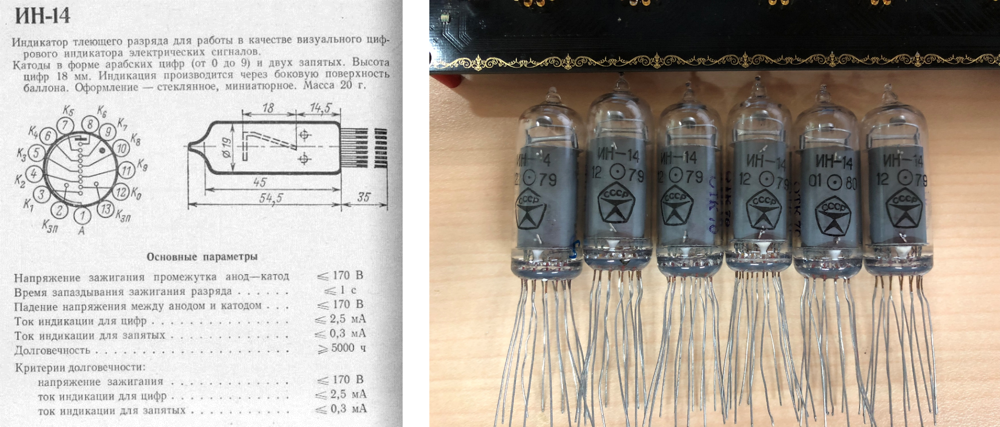
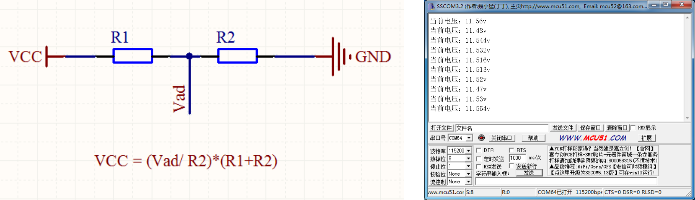
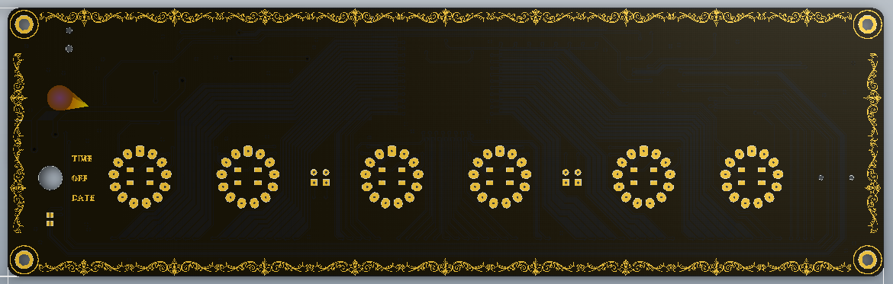
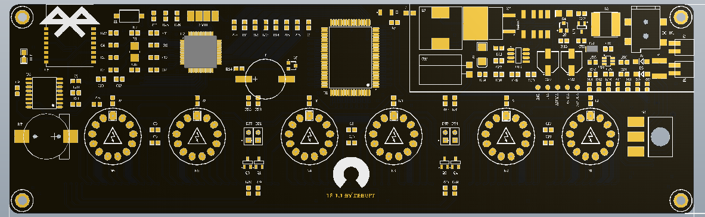
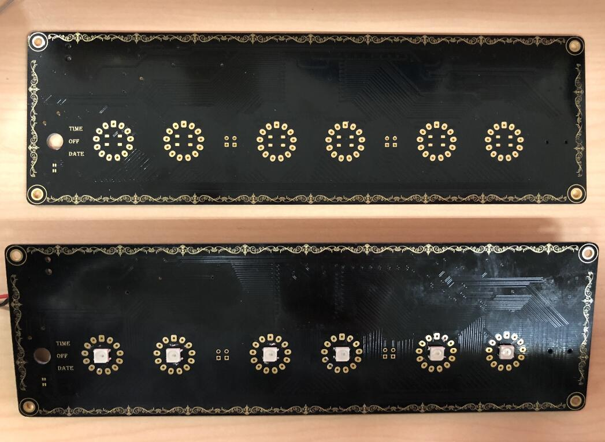
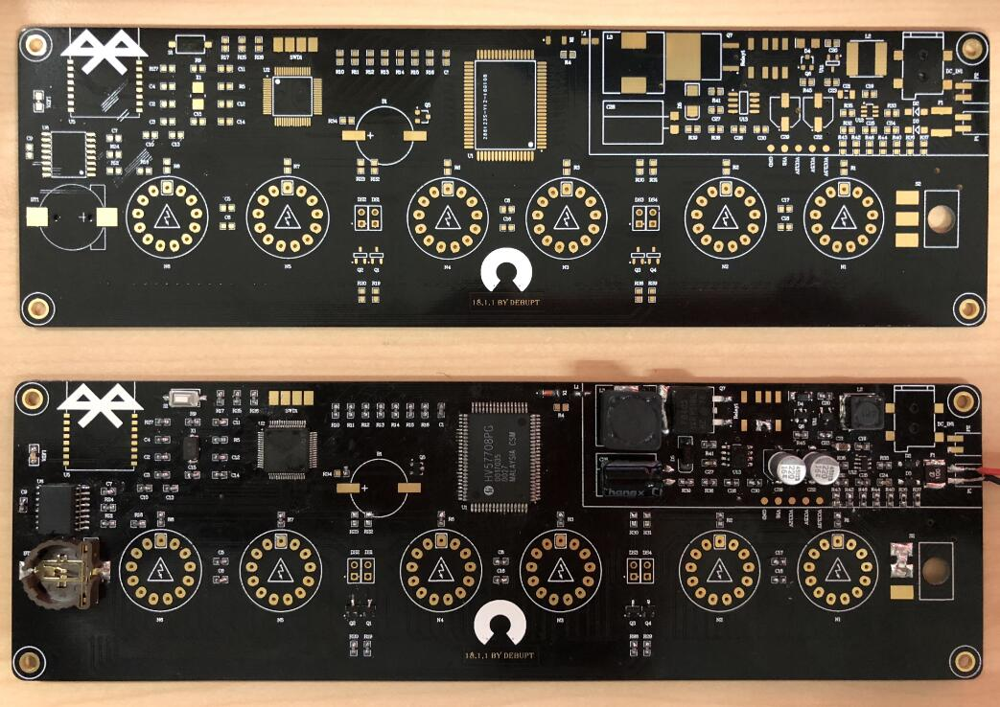
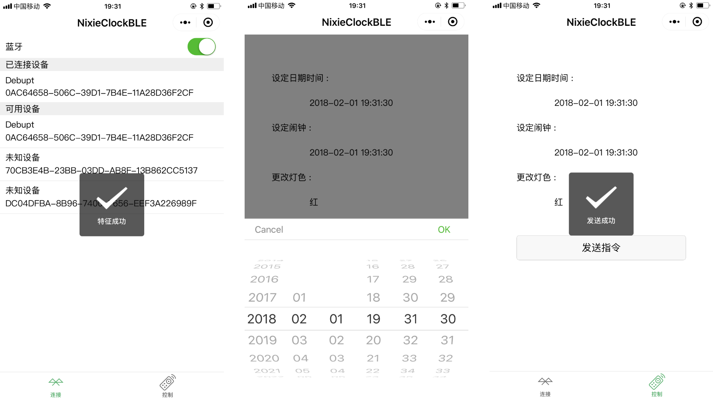
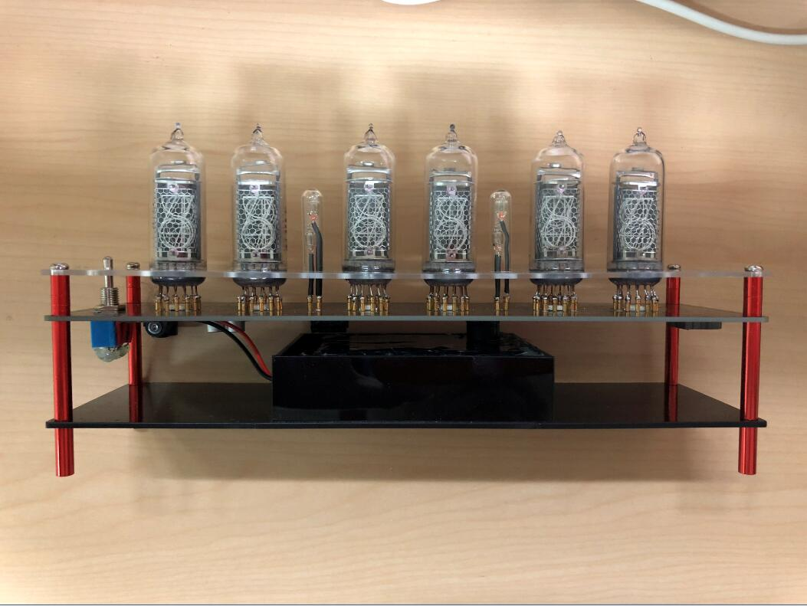
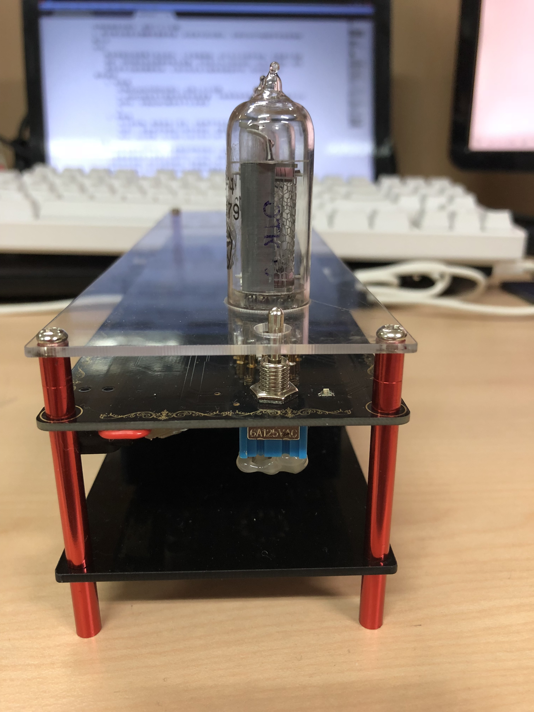
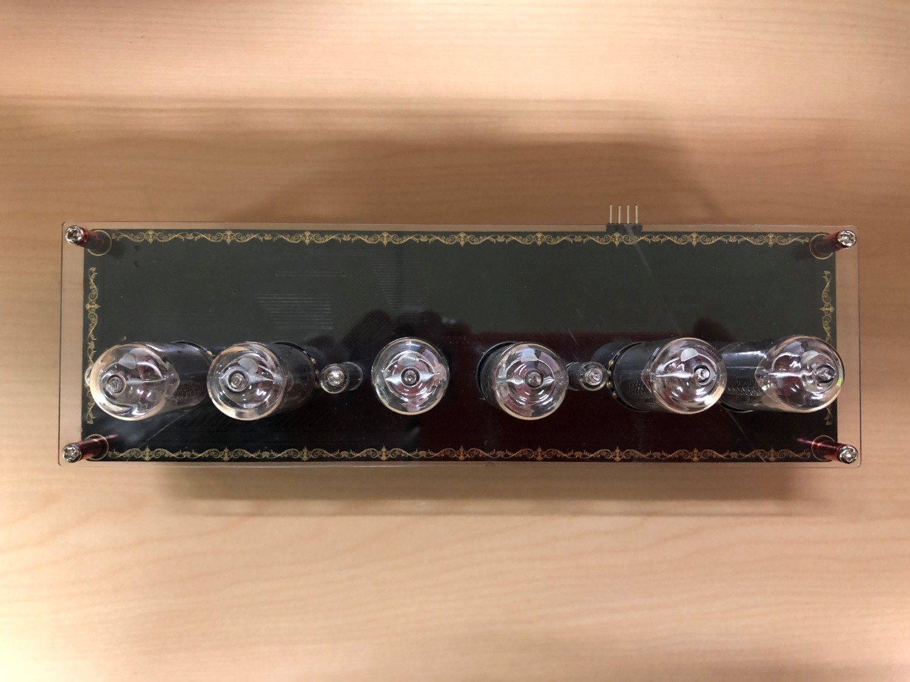

—— すべてはシュタインズ・ゲートの選択である
1. 前言
Divergence Meter 是动漫 Steins;Gate 故事里，男主角冈部伦太郎在不同世界线中穿梭时，用于区分不同世界线的神秘仪器，而其用于显示数字的器件被叫做 辉光管 | Nixie tube。
辉光管是上世纪 60-80 年代被广泛使用的数字显示器件，它利用玻璃做外壳，外形通常为圆柱形，金属电极从底部引出，内部有一个阳极和若干个阴极。通过利用高压，使低压填充入其中的惰性气体 (多为氖气) 产生 辉光放电效应，发出橘红色的光芒。由于需要高压驱动，加之 阴极中毒 导致其寿命较短，截止上世纪90年代，辉光管退出了历史舞台。
2. 设计目标
制作一台可控制的辉光管时钟
通过前期的调研，目前市面上的辉光管时钟，存在以下问题：
- 供电多采用
220V 转 12V 电源适配器，便携性较差 - 时钟控制多采用
红外收发模块，红外传输需要对准方向且中间无障碍物，易用性较差
本制作将最大程度上弥补上述不足，功能如下：
- 六位辉光管显示日期或者时间(可切换)
- 锂电池供电，电压过低自动切断电路保护电池，电量过低提示且可利用外部电源适配器充电
- 报时与闹铃功能
- RGB全彩背景光显示
- 远程遥控，控制时钟开关，更改日期，时间，闹钟，RGB背景灯颜色等
2. 设计方案
- 硬件设计
根据上述需求，其硬件结构如图所示：

- 控制器： STM32F103RBT6
- 辉光管：IN-14
- 辉光管驱动：HV57708
- 蓝牙模快：DX-BT05-A
- 实时时钟：DS3231
- 全彩灯珠：WS2812
- 锂电池：12v/2000mAh
- 升压：MC34063A
- 降压：MP2359 XC6206
几点说明：
a. 辉光管采用
IN-14，由前苏联制造，直径 18.5mm-19mm，管身高度 54.5mm，内部阴极数字高度 18mm，共 13 脚，其中 1 个阳极，12 个阴极。如图：
b. 升压模块采用 MC34063A 实现，其中震荡电容选择不当，会产生明显的 啸叫（稳压电源电路输出的开关电流的频率接近或落入音频范围，或周期性方波群的周期频率接近或落入音频范围。周期性电流经过电感线圈，产生交变磁场，该电感线圈在交变磁场作用下产生振动而发出声音），取 1nF 为宜。升压测试如下：
c. 由于辉光管特殊的结构，需要同时控制多个管脚才能实现数码的切换显示，有两种方案可供选择：
由于利用集成IC，外围电路较为简洁，故采用
HV57708芯片d. RGB 全彩显示，采用 WS2812 灯珠，其集控制与发光电路于一体，采用三基色显示，每个基色均有 256 级亮度，能完成 16777216 种全真彩显示。跑马灯大致可以这样：
e. 对于 12V 锂电池，当电量不足时，应切断电源，并发出报警，避免锂电池由于过放而损坏。考虑到 STM32 的 AD 模块，可以采集 3.3V 以下电压，故采用分压电路，检测支路电压，最终通过电流计算总电压，通过实时检测电压情况以便及时作出报警。
 f. 模块齐全了，整合起来大致是这样（软件模拟图）：




软件设计
软件设计主要分为时钟端与手机端：
时钟端
时钟端主要是STM32的控制逻辑，流程图如下：

手机端
手机端主要是接受用户输入信息，并通过蓝牙将数据传给单片机，流程图如下：

4. 硬件焊接与调试
PCB 采用 1.6mm 板厚，过孔盖油，沉金工艺。
焊接中，先焊接升压，降压电路，在确保电源没有问题后，再完成整个电路板的焊接。
上图（焊接前/焊接后）：


在调试过程中，出现了以下问题：
a. 辉光管出现显示模糊和重影现象，在排查代码问题后，发现是 HV57708 脱焊导致管脚接触不良
b. WS2812 高低电平需要利用寄存器设置，不能使用库函数。原因为库函数执行时间较长，导致 WS2812 模块电平认定错误。其次其数据发送顺序为
GRB。
- 针对 ws2812 灯珠除了直接操作 IO 口外，还可以利用
SPI+DMA的方式控制，优点有二：
SPI利用时钟控制高低电平发送时间，避免使用延时DMA减少 CPU 负荷
5. 软件调试
手机端的蓝牙软件利用微信小程序平台，完整的蓝牙 API 给开发带来了诸多便利，同时即来即用的小程序极大的提高了软件易用性。
微信小程序框架提供了视图层描述语言
WXML和WXSS，以及基于JavaScript的逻辑层架构，并在视图层与逻辑层间提供了数据传输和事件系统，可以让开发者方便的聚焦于数据与逻辑上。翻译一下就是：微信小程序提供了一套
WXML写界面，WXSS写样式，JS写逻辑的前端开发框架。如果对其感兴趣，可移步 微信小程序
在看了 API 后，大致撸了个小程序，它长这样：

三张图展示了连接蓝牙设备，设置时钟信息，发送信息的过程
6. 组装
辉光管驱动需要 170v 的高压，人手直接触碰，会产生不必要的伤害，故需要外壳做保护，同时锂电池也需要有地方放置。外壳设计为三明治结构，中间为电路板，底层黑色亚克力板放置锂电池，上层白色亚克力板做电路保护壳，利用螺栓连接。
成品图：



动图：


7. 总结
本次辉光管时钟的制作，从前期的调研到功能验证，从电路板绘制，焊接到软硬件代码编写，断断续续持续了有两个月的时间。
可以说，这款时钟，基本涵盖了市面上辉光管时钟的所有功能，也尽可能的解决了前面提到了两处痛点，便携性和控制的易用性。后期可以在软件端优化更多功能，实现更加智能化的控制和流畅的用户体验。
DIY电子类小玩具一直是自己的爱好和兴趣，希望自己能一直永葆初心，求知若渴，虚心若愚。
EL PSY CONGROO